Dyndved Strand
5 - Dyndved Strand - Letztes Update 31.07.2025
Navidaten: 54.97446 9.83518 oder: Katholmvej 2, 6430 Nordborg
Hier aktuelle Luftbilder der Schiffssetzungen vom 09.04.2023 von Skråfoto - Screenshots vom 30.10.2023. Skråfoto ist eine Webanwendung, die von Klimadatastyrelsen weltweit kostenlos bereitgestellt wird - Freie Nutzung unter Beachtung der Lizenz: CC BY 4.0 Die Aufnahmen werden seit 2017 alle zwei Jahre erneuert und neben einer Senkrechtaufnahme wird ein Schrägbild aus jeder Himmelsrichtung angeboten.
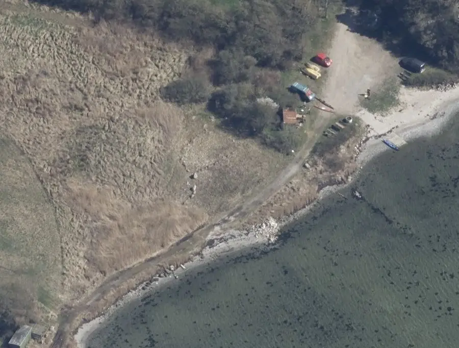
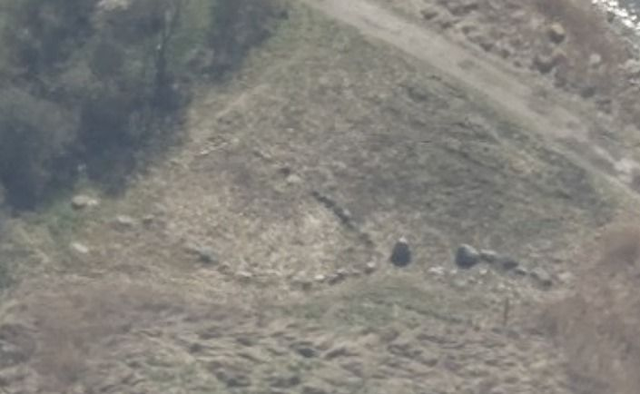
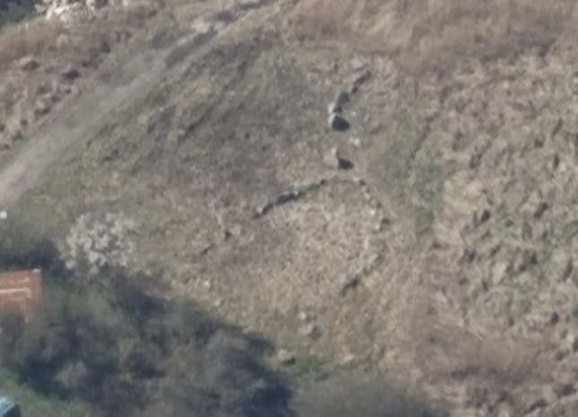
Im Rahmen meiner 2022er Wikingertour war ich am Samstag, 18.06.2022, vor Ort. Eigentlich wollte ich am 29./30.05.2022 bei meiner Anreise nach Dänemark hier sein und hier auch im Auto übernachten. Da die Anreise aber verkehrsbedingt ewig dauerte und dazu noch viel Regen angesagt war, habe ich den Besuch kurzentschlossen auf meinen Rückweg von Dänemark nach Schleswig verschoben. Das war am 18.06.2022 und es herrschte sehr gutes Wetter, das sich aber zur Nacht hin deutlich verschlechterte, weshalb ich doch nicht übernachtete, sondern gleich weiter nach Schleswig fuhr. Das Schilf um die Schiffssetzungen war natürlich wieder nachgewachsen, aber glücklicherweise wohl erst vor kurzem gemäht worden. Es hatte sich bewahrheitet: "Alle guten Dinge sind drei!", so dass ich hier nach zwei erfolglosen Besuchen endlich was zum sehen bekam.


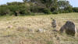 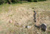 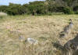 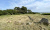


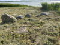 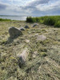 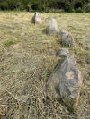 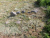 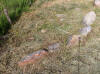 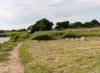


N E U: Im Zuge meiner heutigen - 22.11.2020 - Arbeiten an der Homepage fand ich über den auch ganz u.a. Link diesen sehr erfreulichen Hinweis (Übersetzung):
Museumsinspektion - Journal Nr .: HAM 6128 - Haderslev Museum
Wikingerzeit,
Schiffssetzungen - auf der Strandwiese von Dyndved Strand. Geschützt. Im
Spätsommer
2019 räumte die Gemeinde Sønderborg die Vegetation um die Steine herum, so
dass sie wieder deutlich sichtbar wurden. In diesem Zusammenhang führte die
Archäologie Haderslev im Oktober eine Drohnenregistrierung und eine Untersuchung
der Steinformation durch.
Über diesen Link fand ich bei meinen sofortigen Recherchen auch schon zwei erste Fotos.
Diese weitere Aufnahme vom 15.10.2019 stammt von Detlev Hansen - Lizenz: CC BY-SA 4.0 - Link
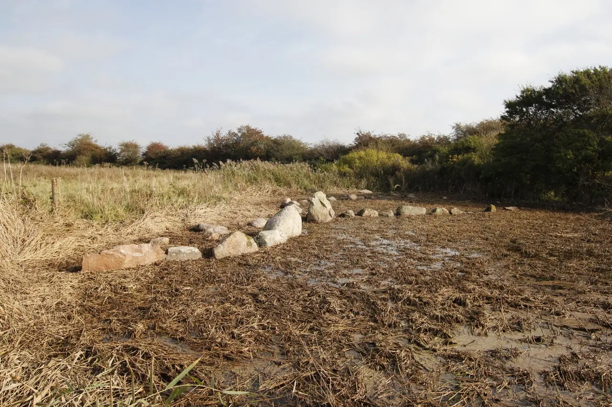
Kurzerhand habe ich beim Museum in Haderslev per E-Mail nachgefragt und bekam die Drohnenfotos (von Anna Egelund) erfreulicherweise umgehend von Tenna R. Kristensen übersandt. Tusind Tak für dieses Entgegenkommen!
Ich darf darüber - unter Verweis auf das Urheberrecht des Museum Sønderjylland (nähere Angaben zum Museum siehe unten) - die Fotos auf meiner Webseite verwenden.
Eine Infotafel des Museums in dänischer Sprache, die Drohnenfotos und eine 3D Modell Ansicht nun hier:

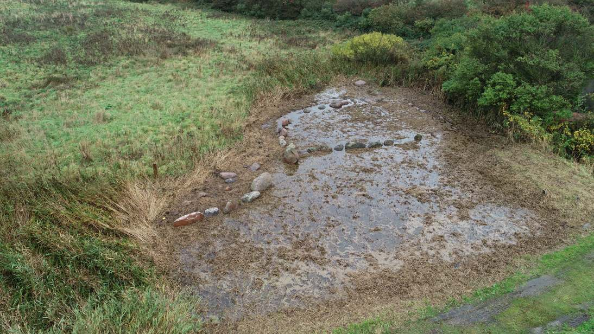
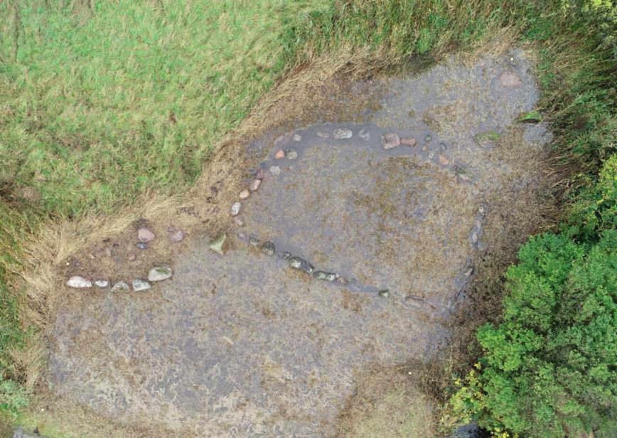
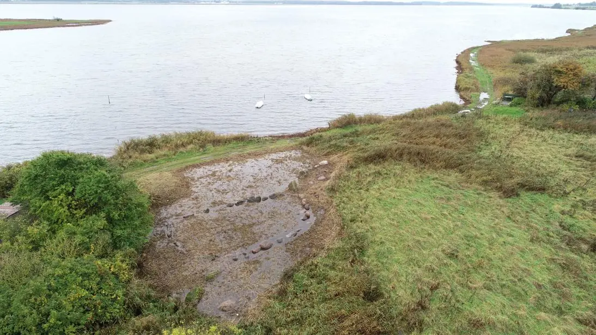
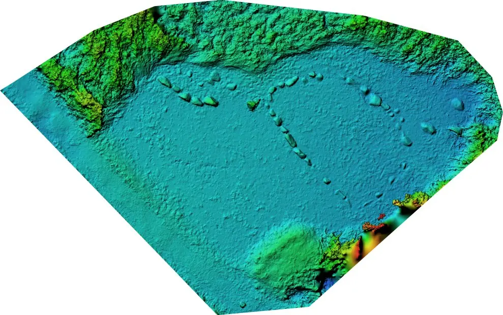
Nun muss ich da nur noch vorbeischauen (In der Hoffnung, dass bis dahin nicht schon wieder alles zugewachsen ist)!
Urheberrecht liegt beim Museum Sønderjylland - Archäologie, Dalgade 7, DK-6100 Haderslev, haderslev@msj.dk, Tel.: +45 65 37 08 01
Inzwischen sind die freigelegten Schiffssetzungen im Internet bei verschiedenen Anbietern über deren Luftfotos erkennbar (z.B. Google Maps), allerdings meist mit schlechter Qualität. Nach meinem Dafürhalten ist hier das beste Material verfügbar - krak.dk (Schiffssetzungen habe ich darüber bereits verlinkt).
Alter Inhalt dieser Webseite:
Bei meinen ersten Recherchen zu den Schiffssetzungen von Stolbro Næs stieß ich auf die Information, wonach sich am nur wenige Kilometer entfernten Strand von Dyndved 3 Schiffssetzungen und ein Grabplatz unmittelbar am Meer befinden (Katholmvej).
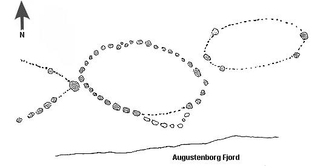
Skizze nach Jens Raben, 1938
Jens Peter Raben (*14.03.1880 - 18.02.1960, Archäologe und Museumsdirektor - link-LIVES)
Bildquelle: 1920 gemalt von Sophus Hansen (1871-1946) - im Besitz des Museum Sønderjylland in Sønderborg - Lizenz: Public Domain
berichtet erstmals von drei Schiffssetzungen am Dyndved Strand, auf die er 1938 stieß und danach auch restaurierte. Zwei sind stark zerstört, alle drei liegen in unmittelbarer Nähe zur Strandkante. Die östliche weist nur noch wenige Steine bei einer Länge von ca. 11 m und einer Breite von ca. 6 m auf. Die westliche besteht aus einem großen Stevenstein und einigen wenigen weiteren Steinen. Nur die mittlere ist einigermaßen gut erhalten. Sie hat eine Länge von ca. 13 m, eine Breite von ca. 7-8 m und besteht aus ca. 40 Steinen. Einige Steine zum Meer hin wurden aus der Schiffssetzung entfernt und dienten zeitweise als Fundament für einen Holzofen.
In unmittelbarer Nähe der Schiffssetzungen fanden sich auch einige wikingerzeitliche Gräber, auf die man beim Kiesabbau in den Jahren 1920-1930 stieß. In einem Fall fand man in 0,7 m Tiefe das Skelett eines 1,69 m großen Mannes, jedoch kein Grabgut.
Am 14.08.2009 hatte ich endlich Gelegenheit die besagte Örtlichkeit aufzusuchen. Allerdings war an der Strandkante, an der sich die Schiffssetzungen befinden sollen, sehr dichter Schilfbewuchs. Von daher war es mir nur möglich einige wenige Steine ausfindig zu machen. Diese dürften nach meinem Dafürhalten jedoch tatsächlich den Schiffssetzungen zuzuordnen sein. (25.11.2020 - siehe oben - Da lag ich falsch!)
Am 23.08.2016 habe ich der Örtlichkeit erneut aufgesucht. Meine Hoffnung diesmal mehr vorzufinden haben sich aber leider nicht erfüllt. Es ergab sich aber die Möglichkeit mit dem zufällig vor Ort anwesenden Landwirt dieses Fleckchen Erde einen kurzes Gespräch zu führen. Ihm habe ich die ausgedruckten Fotos aus den u.a. Verlinkungen gezeigt. Er deutete ihre Lage an. Allerdings war aufgrund des sehr dichten Schilfbewuchses nicht dranzukommen. Seiner Aussage nach, sind aber auch einige umliegende Steine früher den Schiffssetzungen zugehörig gewesen. Es ist sehr schade, dass hier nicht mehr Wert auf eine ansprechende Präsentation dieser historsichen Monumente gelegt wird! Eventuell würde man bei einem Besuch im Winter, wenn die Vegetation zurückgegangen ist, mehr sehen. Das wird mir aber vermutlich nicht so schnell gelingen, da ich immerhin ca. 860 km entfernt davon lebe.
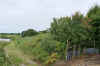

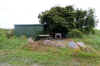

Diese neuen Erkenntnisse aus dem Gespräch mit dem Bauern und die Lage der Schiffssetzungen aus den u.a. Fotos, die ich erst nach meinem ersten Besuch vor Ort im Internet entdeckt habe, würden aber auch bedeuten, dass meine Fotos / Vermutungen aus meinem Besuch am 14. August 2009 doch keine Steine aus den Schiffssetzungen zeigen!
Diese Verlinkung - http://oldtidsglimt.dk/location/skibe-pa-stranden/ - führt nicht mehr zu der ursprünglichen, ehemals sehr informativen Seite (Text in dänisch, Videoklip, etliche Fotos/Skizzen). Es wurde eine Veränderung durch die Entwickler vorgenommen und man kommt nun darüber an eine Art App. In der kann man unten über "Artikler" nach dem Wort "Skibe" suchen und sollte den entsprechenden Beitrag finden. Bei mir funktioniert es allerdings am Laptop nicht. Da sieht man nicht alles und kommt von daher nicht weiter. Über den Link kommt man aber am iPhone / iPad wenigstens zu dem Artikel, kann sich den in dänisch gehaltenen Text durchlesen und auch vorlesen lassen, aber man sieht nur eine Bild, obwohl etliche andere vorhanden sind - Mailverkehr mit dem Entwickler hat mich nicht weitergebracht - es läge an meinen Geräten (?) - 30.03.2022 - sehr schade!
Den o.a. Video (Nur Bilderabfolge - knapp 5 Minuten lang) mit dem Titel "Fortællingen om skibssætninger på Als fra vikingetiden" kann man sich immerhin über You Tube anschauen.
Dieses Luftfoto ist von der Webseite "Skraafoto.dk" - gehört zum "Styrelsen for Dataforsyning og Effektivisering" - Aufnahmedatum 18.06.2021 (Download 23.01.2022) - darf unter Verweis auf deren Urheberrechte frei verwendet werden.
Über diese Webseite wird nach Eingabe der Anschrift die Örtlichkeit mit mehreren Aufnahmen aus den verschiedenen Himmelsrichtungen wiedergegeben.
Den Eintrag zu der Schiffssetzung in "Fund og Fortidsminder" findet man hier. Dort sind 16 Fotos frühere eingestellt. Allerdings sieht man darauf von den Schiffssetzungen nicht wirklich viel, weil zu der Zeit das Schilf noch so dicht/hoch war!
Literaturhinweise:
Jens Raben - Oldtidsminder paa Als - 1938 - in: Fra Als og Sundeved - XIV. Hefte - S.69-72
Jens Raben - 1948 - Skibssætninger - Sønderjydsk Månedsskrift - 24. årgang - S. 75ff.
Steen Wulf Andersen - 1979 - Mellem Kongeå og grænse i den sene jernalder - En arkæologisk oversigt - in: Nordslesvigske Museer - Årbog for museerne i Sønderjyllands amt - 6.
KUML 36 - 1988/89 - Andersen, S. W., & Davidson, J. - Alsiske brandgrave fra den yngre jernalder - S. 249288